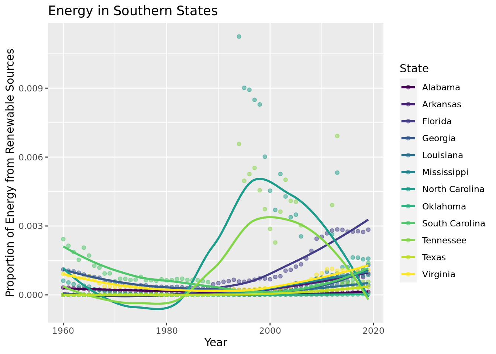
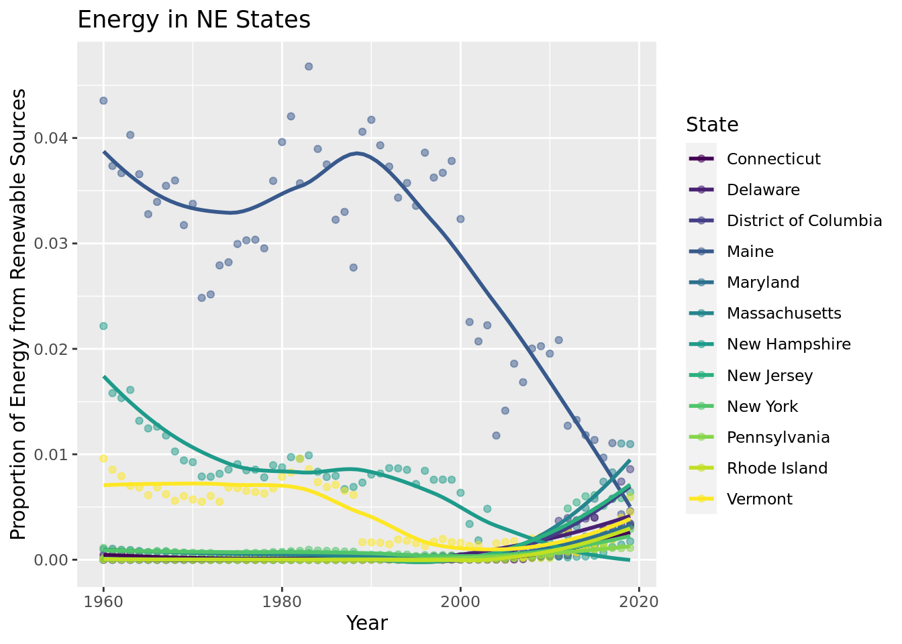
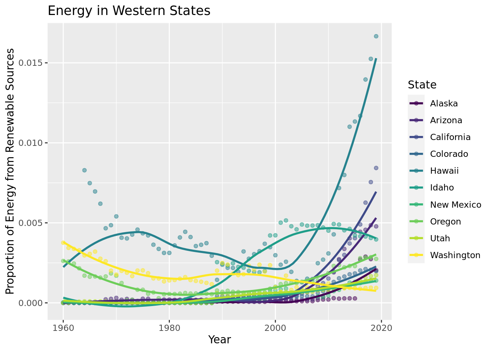
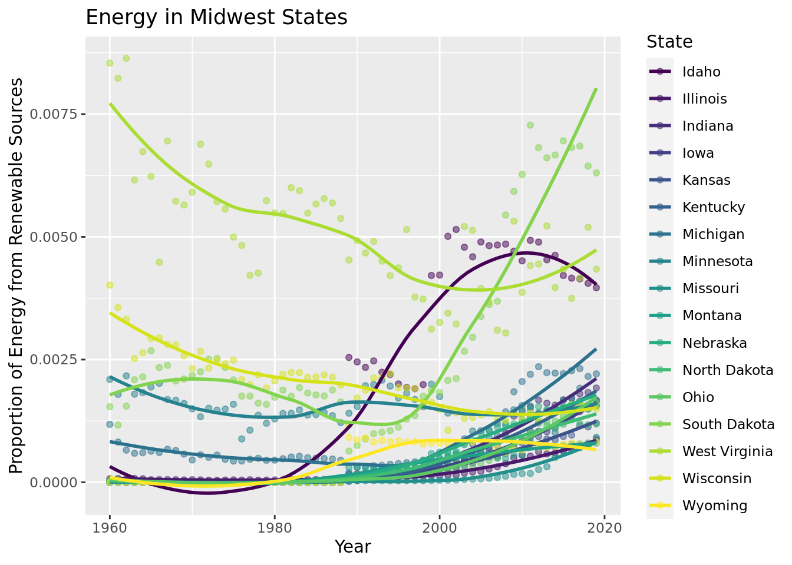
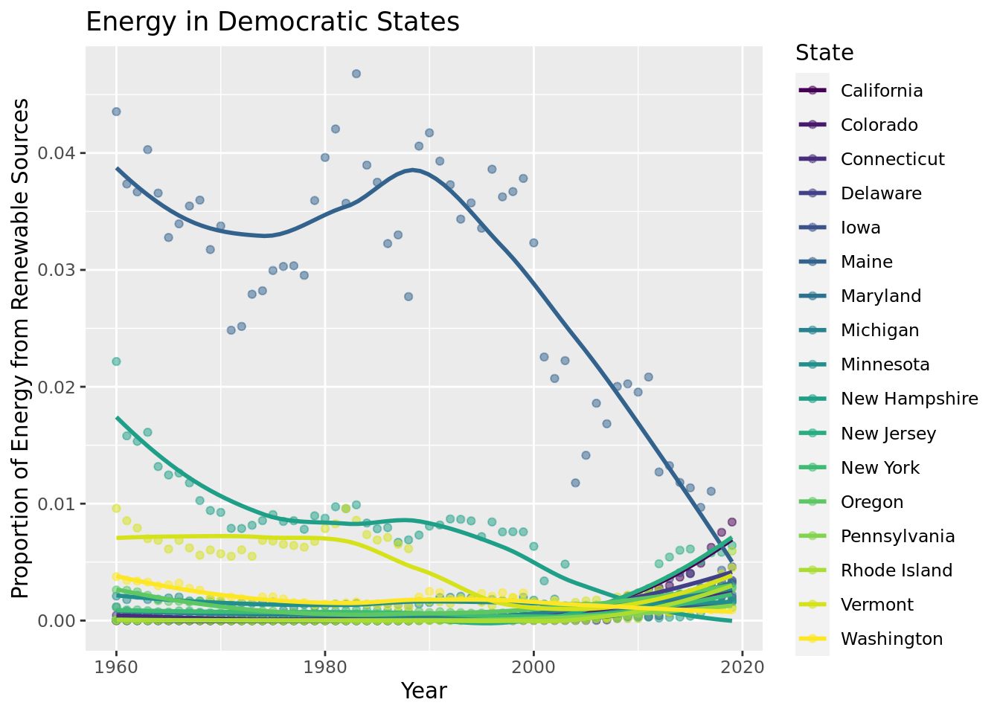
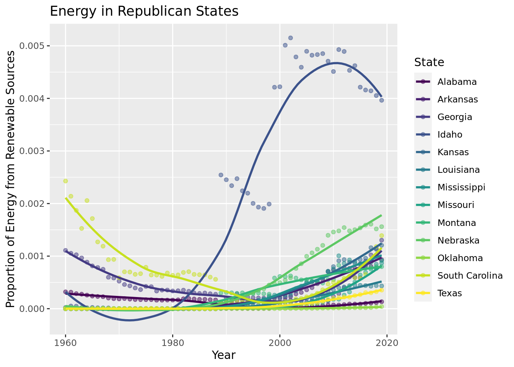

This data set comes from the CORGIS Dataset Project, who got this data from the US Energy Information Administration, a part of the US Government. This data has been collected by the US Energy Information Administration from 1960 to 2019 based on the consumption, production, expenditures, and price of different sources of energy by state.
The observations are of different states in different years and have variables for many energy sources, including coal, kerosene, geothermal, hydro, etc. There are also different variables for the production, consumption, expenditure, and price of these types of energy. For some of these, information was not available, in which case a 0 was reported.
There should be no ethical concerns about the data since the data is not specific to individuals and reports many types of used energy in the US.
Research question: On both a regional and national level, how has the proportion of renewable energy consumption relative to overall energy consumption changed over time, and has this shift been because of geographic, political, or other external factors?
As climate change continues to progress rapidly, it is important to move towards clean technology and renewable energy sources in order to save our earth while ensuring innovation. The United States of America has emerged as a leading renewable energy innovator in the world, which is a perfect study target for researchers who are interested in the implementation of renewable energy. Our team thinks that analyzing the energy usage of different states is a good way to see how our country is progressing toward the goal of slowing global warming on a local level. This research method will help policymakers and environmental engineers pinpoint the specific problems regarding renewable energy in our country and help us move towards a clean future of collaboration of all states.
Important definitions: The data set contains both categorical and quantitative variables. The categorical variables include “State”. The remaining columns, focusing on relevant facts regarding different uses of energy, are all quantitative.
Renewable energy: For our project, energy is considered renewable if it meets two criteria. First, the energy must be derived from a naturally occurring source. Additionally, the energy is naturally replenished at a higher rate than it is consumed/used.
Other energy sources: natural gas, coal, as well as any other sources of energy.
Groups of interest: states, regions, political parties, expenditures and consumption of renewable energy and other energy sources, etc. Our goal is to study the effects of these aforementioned variables to learn about consumption habits and technological specialization of different states.
data <-read_csv("~/Final Project/data/energy.csv")
Rows: 3060 Columns: 84
── Column specification ────────────────────────────────────────────────────────
Delimiter: ","
chr (1): State
dbl (83): Year, Production.Coal, Consumption.Commercial.Coal, Consumption.Co...
ℹ Use `spec()` to retrieve the full column specification for this data.
ℹ Specify the column types or set `show_col_types = FALSE` to quiet this message.
Creating variables total energy, total renewable energy, and proportion of renewable energy consumption:
national_renewable_usage |>ggplot(aes(x = Year, y = prop_renewable_all_states)) +geom_point() +geom_smooth(se =FALSE) +labs(title ="National Renewable Consumption over Time",y ="Proportion of Renewable Energy Consumption")
`geom_smooth()` using method = 'loess' and formula = 'y ~ x'
Here, we use a dot plot to demonstrate the change over time of renewable consumption. Additionally, we added a line of best fit in order to best see how the consumption changed over time. This graph demonstrates that since 1960, there has been an overall increase in the proportion of renewable energy used from about 0.0008 to 0.0025. While this increase is good, the proportion of energy that is renewable is still remarkably low.
model_national <-linear_reg() |>set_engine("lm") |>fit(prop_renewable_all_states ~ Year, data = national_renewable_usage)tidy(model_national)
# A tibble: 2 × 5
term estimate std.error statistic p.value
<chr> <dbl> <dbl> <dbl> <dbl>
1 (Intercept) -0.0343 0.00488 -7.03 0.00000000262
2 Year 0.0000176 0.00000245 7.19 0.00000000142
We estimate the proportion of renewable energy the US uses to increase \(1.76e^{-05}\) every year.
Model fit:
glance(model_national)$r.squared
[1] 0.4710977
glance(model_national)$adj.r.squared
[1] 0.4619787
glance(model_national)$AIC
[1] -788.182
Predicting renewable energy proportions in 2030:
predict(model_national, data.frame(Year =2030))
# A tibble: 1 × 1
.pred
<dbl>
1 0.00148
This model allows us to predict how the use of renewable energy will change in the upcoming years based on the current data. It also allows us to predict, based on this data, what our proportion of renewable energy usage will be in future years, such as 2030.
Regional comparison:
south <- data |>filter(State =="Alabama"| State =="Georgia"| State =="Mississippi"| State =="Texas"| State =="Louisiana"| State =="Oklahoma"| State =="Arkansas"| State =="South Carolina"| State =="Tennessee"| State =="Florida"| State =="North Carolina"| State =="Virginia") |>group_by(State)northeast <- data |>filter(State =="Maine"| State =="Massachusetts"| State =="Vermont"| State =="New Hampshire"| State =="Connecticut"| State =="Pennsylvania"| State =="New York"| State =="New Jersey"| State =="Maryland"| State =="District of Columbia"| State =="Rhode Island"| State =="Delaware")|>group_by(State)west <- data |>filter(State =="California"| State =="Washington"| State =="Oregon"| State =="Colorado"| State =="Utah"| State =="Arizona"| State =="Idaho"| State =="Utah"| State =="New Mexico"| State =="Alaska"| State =="Hawaii") |>group_by(State)midwest <- data |>filter(State =="Montana"| State =="Minnesota"| State =="Nebraska"| State =="Kansas"| State =="Iowa"| State =="Missouri"| State =="Idaho"| State =="Illinois"| State =="Michigan"| State =="North Dakota"| State =="South Dakota"| State =="Wyoming"| State =="Wisconsin"| State =="Indiana"| State =="Ohio"| State =="Kentucky"| State =="West Virginia") |>group_by(State)
south |>group_by(State) |>ggplot(aes(x = Year, y = prop_renewable, color = State)) +geom_point(alpha =0.5) +scale_color_viridis_d() +geom_smooth(se =FALSE) +scale_color_viridis_d() +labs(y ="Proportion of Energy from Renewable Sources", x ="Year", title ="Energy in Southern States")
Scale for colour is already present.
Adding another scale for colour, which will replace the existing scale.
`geom_smooth()` using method = 'loess' and formula = 'y ~ x'

northeast |>group_by(State) |>ggplot(aes(x = Year, y = prop_renewable, color = State)) +geom_point(alpha =0.5) +scale_color_viridis_d() +geom_smooth(se =FALSE) +scale_color_viridis_d() +labs(y ="Proportion of Energy from Renewable Sources", x ="Year", title ="Energy in NE States")
Scale for colour is already present.
Adding another scale for colour, which will replace the existing scale.
`geom_smooth()` using method = 'loess' and formula = 'y ~ x'

west |>group_by(State) |>ggplot(aes(x = Year, y = prop_renewable, color = State)) +geom_point(alpha =0.5) +scale_color_viridis_d() +geom_smooth(se =FALSE) +scale_color_viridis_d() +labs(y ="Proportion of Energy from Renewable Sources", x ="Year", title ="Energy in Western States")
Scale for colour is already present.
Adding another scale for colour, which will replace the existing scale.
`geom_smooth()` using method = 'loess' and formula = 'y ~ x'

midwest |>group_by(State) |>ggplot(aes(x = Year, y = prop_renewable, color = State)) +geom_point(alpha =0.5) +scale_color_viridis_d() +geom_smooth(se =FALSE) +scale_color_viridis_d() +labs(y ="Proportion of Energy from Renewable Sources", x ="Year", title ="Energy in Midwest States")
Scale for colour is already present.
Adding another scale for colour, which will replace the existing scale.
`geom_smooth()` using method = 'loess' and formula = 'y ~ x'

*The scale on the y axis of each of the regional graphs differs based on the magnitude of its respective data, so when comparing these graphs take this into consideration as the data in certain graphs represent smaller changes despite how it may look on the graph.
These graphs allow us to visualize and compare the states by region. The states were grouped into four regions, Northeast, West, Midwest, and South. Overall, these graphs show that the Northeast as a region has the highest proportion of renewable energy, followed by the West, the South, then the Midwest. There are a few notable outliers, especially Hawaii in the West, which has the highest renewable energy output of any state, and a spike in 2000 from North Carolina and Tennessee in the South.
\(\widehat{prop\_renewable} = -5.05e^{-2}+2.57e^{-5} * Year + 1.29e^{-1}*northeast + 4.61e^{-2} * south + 8.50e^{-4} * west - 6.31e^{-5}*Year*northeast -2.34e^{-5}*Year*south -2.96e^{-7}*Year*west\)
{1 if south; 0 if not} {1 if northeast; 0 if not} {1 if west; 0 if not}
Interpreting our model:
Holding region constant, we estimate the proportion of renewable energy a state uses to increase \(2.57e^{-05}\) every year.
Holding year constant, we estimate the proportion of renewable energy a state uses to increase \(0.475\) for the Northeast region
Holding year constant, we estimate the proportion of renewable energy a state uses to increase \(0.624\) for the South region.
Holding year constant, we estimate the proportion of renewable energy a state uses to increase \(0.156\) for the West region.
Holding year constant, we estimate the proportion of renewable energy a state uses to decrease \(0.683\) for the Midwest region.
We estimate the proportion of renewable energy a state in the Northeast uses to decrease \(0.043\) each year.
We estimate the proportion of renewable energy a state in the South uses to decrease \(0.016\) each year.
We estimate the proportion of renewable energy a state in the West uses to decrease \(0.003\) each year.
Model fit:
glance(model_region)$r.squared
[1] 0.09329481
glance(model_region)$adj.r.squared
[1] 0.09026091
glance(model_region)$AIC
[1] -16233.92
Predicting renewable energy proportions in 2030:
predict(model_region, data.frame(Year =2030, region ="west"))
# A tibble: 1 × 1
.pred
<dbl>
1 0.00195
predict(model_region, data.frame(Year =2030, region ="south"))
# A tibble: 1 × 1
.pred
<dbl>
1 0.000329
predict(model_region, data.frame(Year =2030, region ="northeast"))
# A tibble: 1 × 1
.pred
<dbl>
1 0.00229
predict(model_region, data.frame(Year =2030, region ="midwest"))
# A tibble: 1 × 1
.pred
<dbl>
1 0.00170
predict(model_region, data.frame(Year =2030, region ="south"))
# A tibble: 1 × 1
.pred
<dbl>
1 0.000329
predict(model_region, data.frame(Year =2030, region ="northeast"))
# A tibble: 1 × 1
.pred
<dbl>
1 0.00229
predict(model_region, data.frame(Year =2030, region ="midwest"))
# A tibble: 1 × 1
.pred
<dbl>
1 0.00170
Similar to the national model, this model allows us to predict how the use of renewable energy will change in the upcoming years based on the current data for each region. It also allows us to predict, based on this data, what our proportion of renewable energy usage will be in future years for these regions, such as in 2030.
Political Affiliations:
democrat <- data |>filter(State =="California"| State =="Oregon"| State =="Washington"| State =="Nevada"| State =="Colorado"| State =="New Mexico"| State =="Minnesota"| State =="Iowa"| State =="Hawaii"| State =="Wisconsin"| State =="Illonois"| State =="Michigan"| State =="Florida"| State =="Virginia"| State =="Maryland"| State =="Delaware"| State =="Pennsylvania"| State =="New Jersey"| State =="New York"| State =="Massachussetts"| State =="Rhode Island"| State =="Connecticut"| State =="Vermont"| State =="New Hampshire"| State =="Maine") |>group_by(State)republican <- data |>filter(State =="Alaska"| State =="Idaho"| State =="Montana"| State =="Wyoming"| State =="North Dakota"| State =="South Dakota"| State =="Nebraska"| State =="Kansas"| State =="Oklahoma"| State =="Texas"| State =="Missouri"| State =="Arkansas"| State =="Louisiana"| State =="Mississippi"| State =="Alabama"| State =="Tennessee"| State =="Kentucky"| State =="Indiana"| State =="Ohio"| State =="West Virginia"| State =="Georgia"| State =="South Carolina"| State =="North Carolina") |>group_by(State)
These states were grouped by democratic and republic based on how they voted in 2018 because this dataset ended in 2019, and 2018 was the most recent nationwide voting before that.
democrat |>ggplot(aes(x = Year, y = prop_renewable, color = State)) +geom_point(alpha =0.5) +scale_color_viridis_d() +geom_smooth(se =FALSE) +scale_color_viridis_d() +labs(y ="Proportion of Energy from Renewable Sources", x ="Year", title ="Energy in Democratic States")
Scale for colour is already present.
Adding another scale for colour, which will replace the existing scale.
`geom_smooth()` using method = 'loess' and formula = 'y ~ x'

republican |>ggplot(aes(x = Year, y = prop_renewable, color = State)) +geom_point(alpha =0.5) +scale_color_viridis_d() +geom_smooth(se =FALSE) +scale_color_viridis_d() +labs(y ="Proportion of Energy from Renewable Sources", x ="Year", title ="Energy in Republican States")
Scale for colour is already present.
Adding another scale for colour, which will replace the existing scale.
`geom_smooth()` using method = 'loess' and formula = 'y ~ x'

*The scales on the y axis of the democratic graph is approximately 10 times greater than that of the republican graph, so when comparing take this into consideration as the data in the democratic graph represents more change than the republican graph.
These graphs allow us to visualize and compare the proportion of renewable energy used by republican and democratic states. These graphs demonstrate that overall the democratic states use more renewable energy than republican states. There are a few notable outliers, specifically Maine in the democratic states and Idaho in the republican states.
model_political <-linear_reg() |>set_engine("lm") |>fit(prop_renewable ~ Year * party, data = data_political)tidy(model_political)
# A tibble: 4 × 5
term estimate std.error statistic p.value
<chr> <dbl> <dbl> <dbl> <dbl>
1 (Intercept) -0.0141 0.109 -0.129 0.897
2 Year 0.00000854 0.0000549 0.156 0.876
3 partyRepublican State 0.0185 0.110 0.168 0.867
4 Year:partyRepublican State -0.00000992 0.0000553 -0.179 0.858
\(\widehat{prop\_renewable}=-1.41e^{-2}+8.54e^{-6}*Year+1.85e^{-2}*Republican State - 9.92e^{-6}*Year*Republican State\)
{1 if Republican state; 0 if Democratic state}
Holding party constant, we estimate the proportion of renewable energy a state uses to increase \(8.54e^{-06}\) every year.
Holding year constant, we estimate the proportion of renewable energy a state uses to increase \(0.250\) for the Democratic states.
we estimate the proportion of renewable energy a state uses to decrease \(0.025\) for the Republican states each year.
glance(model_political)$r.squared
[1] 0.001031103
glance(model_political)$adj.r.squared
[1] -0.0003987193
glance(model_political)$AIC
[1] -16038.41
predict(model_political, data.frame(Year =2030, party ="Democratic State"))
# A tibble: 1 × 1
.pred
<dbl>
1 0.00328
predict(model_political, data.frame(Year =2030, party ="Republican State"))
# A tibble: 1 × 1
.pred
<dbl>
1 0.00161
Similar to the previous models, this model allows us to predict how the use of renewable energy will change in the upcoming years based on the current data for the states affiliated with each political party. It also allows us to predict, based on this data, what our proportion of renewable energy usage will be in future years for these parties, such as in 2030.
Results
Our data confirms several important pieces of information about renewable energy usage in the United States. The first is that on a national level, we expect the proportion of renewable energy to continue increasing each year, with a predicted 2030 proportion of 0.0015. However, with that being said we also calculated a low adjusted r-squared value of 0.46, showing a low correlation between a rising proportion of renewable energy and year. This proportion of 0.0015 is very low for the amount of total energy in the US that is renewable. While it is continually increasing, it is increasing very slowly. Therefore, this further proves that big changes need to be made in the use of renewable energy in the United States if we want to slow or stop climate change.
Additionally, on regional levels, we’ve predicted that the NE will have the highest proportional of renewable energy in the year 2030 at 0.0023, compared to the lowest region, the south, which is predicted to be at 0.00033. Yet, once again, our adjusted r-squared value of 0.09 shows that our estimation is only that, and there is significantly low correlation between the proportion of renewable energy versus year and region, even less than on a national level. Even though this model has a low R squared, there is correlation between region and renewable energy usage. This is most likely a cause of cultural factors in these different regions. These cultural differences manifest because of differing beliefs about climate change as well as different economies and areas of employment. Another factor to consider when looking at regions is accessibility to renewable energy. However, since the Midwest is the region that produces the most renewable energy, but it only has the third highest proportion of renewable energy it is unlikely that this is a large factor in usage of renewable energy.
Lastly, when we divided the states based on political affiliation, we found that states who are democratic overall had a higher proportion of renewable energy usage than republican states and are increasing at a faster rate as well. However, we found an adjusted r-squared of -0.0004, showing that there is a very high level of variability that can not be explained by this model. Therefore, while policy based on party likely has an effect, there are many other variables at play to explain the usage of renewable energy.
Furthermore, a big takeaway from our calculation is that our regional AIC came out to be -16,233.92, while the political affiliation AIC came out to -16038.41, showing that there are a lot of other factors not present in our data set which need to be taken into account and can better explain a correlation to the proportion of renewable energy. Even on a national level, using time as a predictor of the proportion of renewable energy resulted in an AIC of -788.18, so overall the models we have do not represent a meaningful connection to the proportion. This can be summed up to some of the limitations of our data set, with the first being its lack of data on a smaller scope. The information it contains does not go beyond a state level, and we believe that local factors such as resources, energy rates, and metropolitan population can better explain the choice to use renewable energy. Additionally, current events which could potentially affect the energy market and decision making about energy sources are also not included in the data set, which we believe is another significant factor left out. These have manifested in many different ways since 1960, including oil crises, economic crises, and job availability. All of these factors and many more create a huge amount of variability in this data set, making it difficult to predict the future usage of renewable energy.
Overall, there is not one factor we can look at in order to improve renewable energy usage, instead we need to look at climate change as a whole. If we can increase the amount of education and discourse about climate change, we can hope to bring it into the forefront of people’s minds. That way they will consider the effects of everything they do economically, politically, and in their personal lives on the effect on the climate. It is imperative that we work towards a higher national usage of renewable energy at every level in order to save our planet.